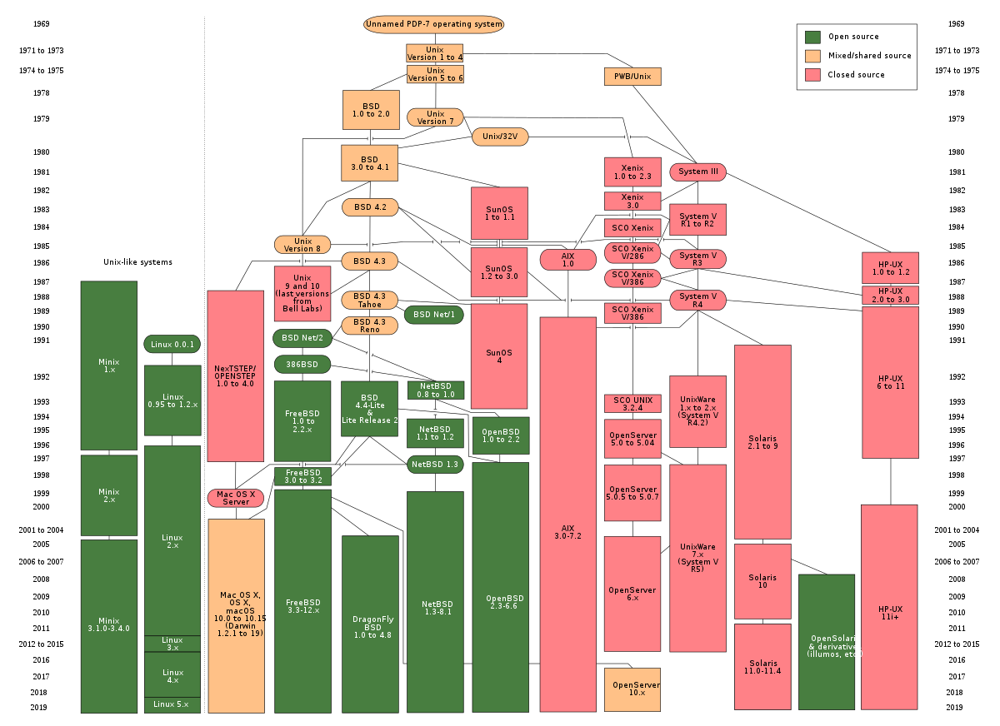

| Part 1: | How to access remote servers via ssh |
| Part 2: | How to Navigate/Manipulate a Un*x Filesystem |
| Part 3: | How to create and execute a simple bash script |

ssh username@somedomain.com
# enter password prompt
# do some work
exit
uname -a
SSH into a server, investigate it's OS information and then exit
/path/to/file.txt
cd / # Root directory
cd ~ # Home directory
cd . # Current directory
cd .. # Previous directory
These commands will help you get around
cd /path/to
# change current directory
ls
# List current directory contents
pwd
# Show parent directory (where am I?)
cd ~
cd /some/path
pwd
# /some/path
cd ~
cd some/path
pwd
# ~/some/path
Basic file manipulation operations you might want to perform on a file / directory
The following commands create a file / directory
touch somefile.txt
# create an empty file
mkdir somedir
# create a new directory
Note: you can also create a new file using an code editor
The following commands delete a file / directory
rm somefile.txt
# deletes a file
rm -r somedir
# delete a new directory
Warning: there's no coming back from rm
The following commands copy a file / directory
cp somefile1.txt somefile2.txt
# copy a file
cp -r somdir1 somdir2
# copy a directory
Note: the -r flag stands for recursive
The following commands move a file / directory
mv somefile.txt ~/somefile.txt
# moves a file to your HOME
mv dir ~/dir
# works the same as file
Note: you can also use the mv command to rename a file
Try and perform the following steps
There's a decent selection of command-line based code editors
Note: most desktop editors have some method of remote editing, so using terminal-based editors isn't always necessary
Fill in the following code
#!/bin/bash
echo "Hello World!"
To execute the file, make it an executable with chmod
chmod +x test.sh
Then execute it from your shell by preceding the file with ./
./test.sh
#! at the top of our hello
world program before./
syntaxYou can use this to run python files as scripts as well
#!/usr/bin/python
print("Hello World")
Create and execute a bash script that makes a new directory called Test with a single file Test1.txt inside it